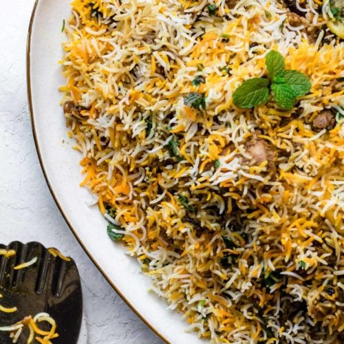

My Recipies
Recipes are a great way to learn new cooking skills, try new flavors, and impress your friends and family. With just a few simple ingredients, you can create a delicious meal that everyone will love. So next time you're looking for something to cook, be sure to check out a recipe or two.
Beef Salad Recipe

This beef salad is a quick and easy meal that is perfect for a light lunch or dinner. The ground beef is cooked until browned and then tossed with onions, lettuce, and mini tomatoes. A simple dressing made with mayonnaise, ponzu sauce, sesame oil, salt, and pepper is then added to the salad. The salad can be served immediately or chilled for later.
Chicken Biryani
Chicken biryani is a delicious and aromatic rice dish that is popular in India. It is made with chicken, rice, spices, and herbs. The chicken is first marinated in a mixture of spices, and then it is cooked with the rice. The rice is cooked in a sealed pot, so that the flavors of the spices and the chicken are infused into the rice. Chicken biryani is typically served with raita, a yogurt-based side dish.